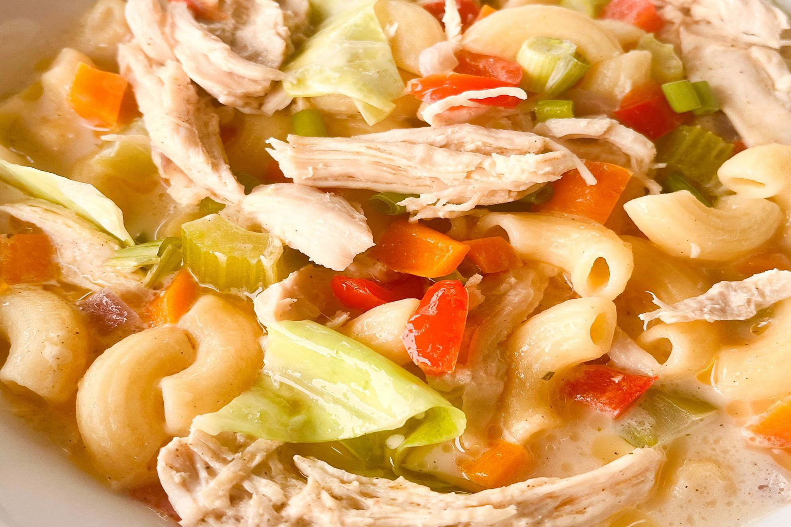

| Sopas  | |
|---|---|
| Ingredients: 750ml (3 cups) water 2 (about 600g) chicken breast fillets 160g (1 1/2 cups) dried elbow macaroni pasta 60ml (1/4 cup) canola or vegetable oil 2 garlic cloves, crushed 3 celery stalks, coarsely chopped 1 brown onion, coarsely chopped 1 carrot, peeled, coarsely chopped 1/2 red capsicum, deseeded, chopped 1L (4 cups) chicken stock 2 chicken stock cubes 1/2 cabbage, coarsely chopped 385ml can evaporated milk |
Recipe: Step 1 Bring the water to the boil in a saucepan over high heat. Add the chicken and reduce heat to medium. Cover and cook for 15-18 minutes or until the chicken is cooked through (add more water, if needed). Drain and set aside to cool slightly. Once cool enough to handle, shred chicken and set aside. Step 2 Meanwhile, cook the pasta in a saucepan of boiling salted water following packet directions or until al dente. Drain. Step 3 Heat the oil in a large saucepan over medium heat. Add the garlic and cook, stirring, for 1 minute or until aromatic. Add the celery, onion, carrot and capsicum. Cook, stirring, for 2-3 minutes or until starting to soften. Step 4 Add the shredded chicken to the pan. Cook, stirring, for 1 minute. Add the stock and stock cubes, and stir to combine. Cover and bring to the boil. Step 5 Add the cabbage to the pan. Cook, stirring, for 3-5 minutes or until the cabbage wilts (add more water, if needed). Add the drained pasta. Mix well. Add the evaporated milk. Cover and bring to the boil. Simmer for 3 minutes or until heated through. Season, to taste. Serve. |